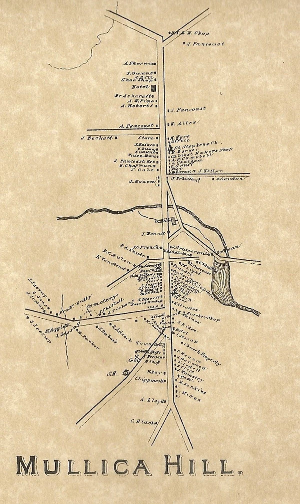

About
About Mullica Hill

Mullica Hill has kept its shape as a country village for more than three hundred years, and has been called one of the most unspoiled village enclaves in New Jersey.
The first settlers arrived in the opening decade of the 1700s: Swedes, Finns, and Quakers, who built two knots of houses facing each other across Raccoon Creek. The Quaker side, south of the water, went by Spicerville after Jacob Spicer, its leading landowner. The north bank belonged to the Mullicas, Eric, John, and William, who took up land there from 1705, and it was their rise that carried the name Mullica's Hill. The Finnish and Swedish ways of the north bank faded within a generation or two, but the name outlived them and spread to the whole settlement on both banks.
The village grew fastest between about 1780 and 1830, nearly all of it along South Main Street, where the shops and trades gathered. North Main stayed farmland, and was not cut into town lots until the middle of the 19th century or later. The railroad arrived in 1889 and made the village one of the busiest produce shipping points in the region, a boom you can still read in the warehouse, the feed store, and the bank on this tour.
In 1991 the whole village was entered on the National and New Jersey Registers of Historic Places, and the next year Harrison Township made it a local historic district.
This tour is presented by the Harrison Township Historical Society, founded in 1971 to preserve Old Town Hall, where the tour begins and where the Society's museum and research library are open to visitors. Nearly all photographs on these pages are drawn from the Society's collections and from its 2018 book, Images of America: Mullica Hill and Old Harrison Township, by James F. Turk and Karen E. Heritage, available at the museum.
Did You Know
The family name outran the family. The Mullica River, thirty miles southeast in the Pine Barrens, carries the same name; the family's 1930 historian remarked that Eric Mullica left his name on both the river and the hill.